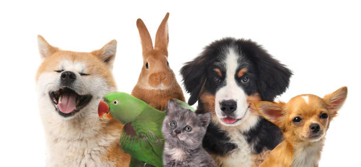

| Inicio | Perros | Gatos | Otros |
🐦🐰🐟OTROS ANIMALES QUE SE PUEDEN ADOPTAR🐦🐰🐟
ANIMALES QUE PUEDEN SER MASCOTAS
~Conejos 🐰~
~Hámsters 🐹~
~Cobayas (Cuyos) 🐾r~
~Aves (periquitos, canarios, loros, cacatúas) 🦜~
~Peces 🐠 ~
~Tortugas 🐢~
~Hurones 🦦~
~Erizos 🦔~
~Reptiles (geckos, serpientes, iguanas) 🦎~
~ETC.....~
